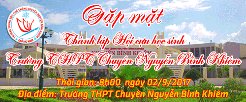
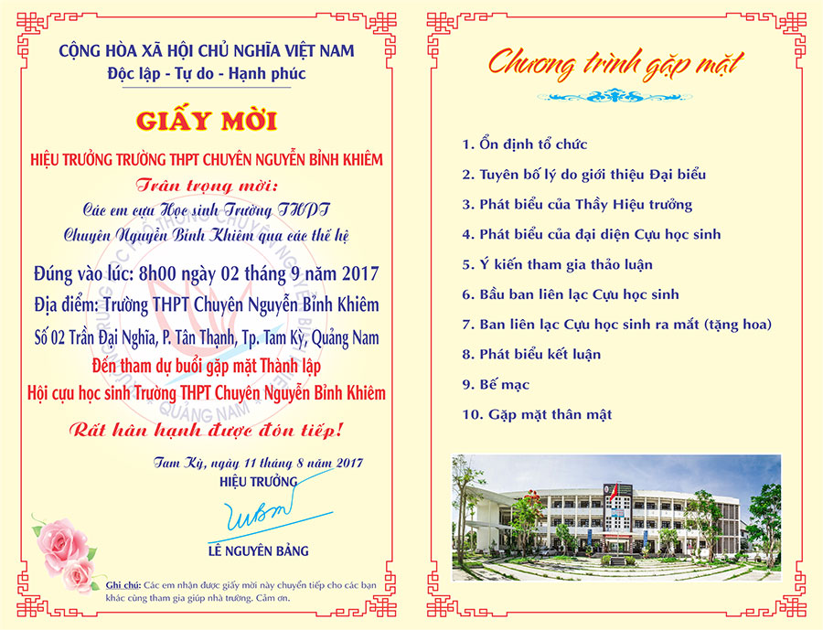

Thông báo gặp mặt Cựu học sinh THPT Chuyên Nguyễn Bỉnh Khiêm

Lần cập nhật cuối lúc Thứ hai, 11 Tháng 9 2017 08:28 Viết bởi Administrator Thứ sáu, 11 Tháng 8 2017 14:02

SỞ GIÁO DỤC - ĐÀO TẠO QUẢNG NAM
TRƯỜNG THPT CHUYÊN NGUYỄN BỈNH KHIÊM
THÔNG BÁO
Về việc gặp mặt Cựu học sinh THPT Chuyên Nguyễn Bỉnh Khiêm
Các em Cựu học sinh THPT Chuyên Nguyễn Bỉnh Khiêm quý mến!
Trong thời gian qua, nhiều em Cựu học sinh của nhà trường ít nhiều trưởng thành đã và đang quay trở về mái ấm thân thương của ngày xưa một thời cắp sách. Các em đã bày tỏ niềm vui, niềm hạnh phúc và luôn tự hào vì được học tập dưới mái trường THPT Chuyên giàu truyền thống Dạy và Học của xứ Quảng. Các em cũng đã thể hiện được tấm lòng, trách nhiệm của mình đối với trường xưa qua những việc làm cụ thể: Tư vấn du học, tư vấn hướng nghiệp, tổ chức các sân chơi trí tuệ, các hoạt động kỹ năng, góp phần giáo dục truyền thống nhà trường,... Điều này đã ít nhiều giúp cho các em học sinh đang ngồi trên ghế nhà trường có được động lực, tâm thế và khát vọng của một học sinh trường THPT Chuyên trước khi vào đời.
Tuy nhiên, để có được những hoạt động lớn mang tầm vóc, dấu ấn của một trường THPT Chuyên thực sự cần phải có sự đồng tâm, hiệp lực, trí tuệ của rất nhiều lực lượng xã hội, nhất là lực lượng Cựu học sinh. Vì thế, chúng ta cần phải có một tổ chức chặt chẽ, bài bản, đông đảo, hùng hậu. Mái trường THPT Chuyên Nguyễn Bỉnh Khiêm phải là nơi hội tụ, gắn kết, đi về của nhiều thế hệ học sinh.
Với lý do đó, BGH trường THPT Chuyên Nguyễn Bỉnh Khiêm trân trọng thông báo cho các em Cựu học sinh sắp xếp thời gian, công việc của mình để về trường họp mặt Cựu học sinh vào lúc 8h00’ ngày 02/9/2017. Sự hiện diện đông đảo của các em là niềm động viên khích lệ đối với nhà trường. Hơn nữa, đây cũng là sự khởi đầu cho các hoạt động ý nghĩa, thiết thực của Cựu học sinh sau này.
Trân trọng!
Tam Kỳ, ngày 11 tháng 8 năm 2017
HIỆU TRƯỞNG
(Đã ký)
Lê Nguyên Bảng
Giấy mời gặp mặt

Đăng ký tham gia gặp mặt thành lập Hội cựu học sinh vào ngày 02/9/2017 tại đây
- 13/12/2016 09:38 - Danh sách cựu học sinh và ban liên lạc cựu học sin…
- 02/12/2016 14:32 - Thông tin về Ban liên lạc cựu học sinh Trường THPT…